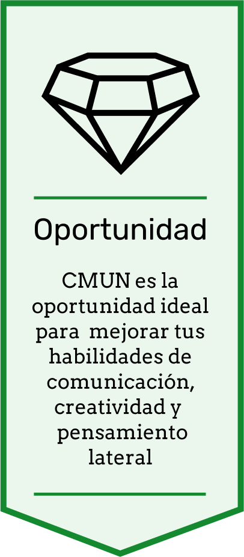
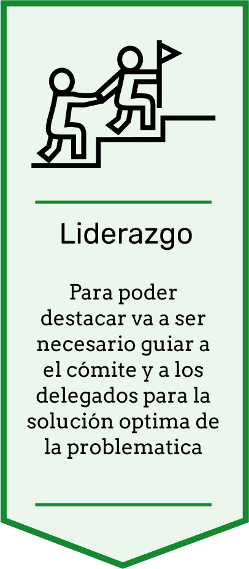
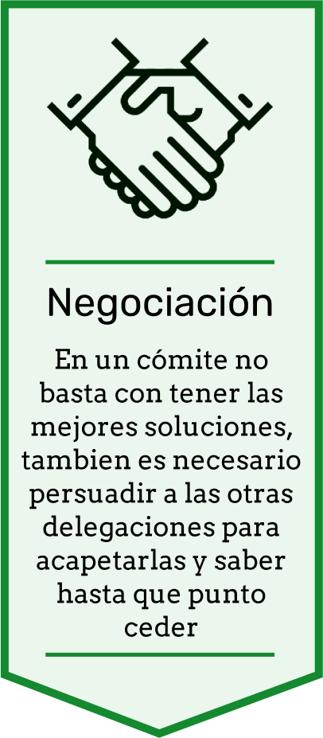

Somos la delegación oficial para los Modelos de Naciones Unidas del Colegio Nuestra Señora del Chiquinquirá
Los MUN son simulacros, donde los delegados toman el rol de representar un país o una organización en las Naciones Unidas. Los delegados debaten en los distintos comités con el objetivo de alcanzar resoluciones sobre los diferentes asuntos en el programa de la ONU.
Comité organizador 2020 - 2021
Román Vanegas
Zelko Stojanovich
0424-6375918Walessa Torres
0414-9669094Guillermo González
0424-2508464Crismar Quintero
0414-6221879Es el modelo interno del Colegio Maristas, su principal objetivo es la capacitación de los participantes para ser parte de la delegación.
Al ser un modelo interno pueden participar todos los estudiantes que cursen bachillerato en el Colegio Nuestra Señora de Chiquinquirá.